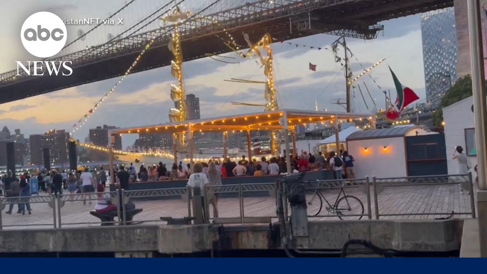

【墨西哥海军舰船撞击布鲁克林大桥 至少2人死亡】
Summary: A Mexican Navy ship crashed into New York City's Brooklyn Bridge, killing at least two people and injuring over a dozen, with dramatic footage capturing the collision.
摘要： 一艘墨西哥海军舰船撞击纽约市布鲁克林大桥，造成至少2人死亡，十余人受伤，现场画面记录了撞击的惊险瞬间。

⏱️ Estimated Reading Time: 4 min
That incredible, incredible story overnight.
这一令人难以置信的事件发生在夜间。
That breaking news.
这是一则突发新闻。
A Mexican Navy ship slamming into New York City's iconic Brooklyn Bridge.
一艘墨西哥海军舰船猛烈撞击纽约市标志性的布鲁克林大桥。
The mast hit the underside of the bridge, sending sailors who were on that mast tumbling, others clinging for their lives.
桅杆撞击桥底，导致桅杆上的水手跌落，其他人拼命抓住以求生。
Onlookers absolutely stunned at the scene unfolding before them on a warm spring night.
在温暖的春夜，旁观者对眼前发生的场景感到震惊。
At least two people were killed and more than a dozen others injured.
至少两人死亡，十余人受伤。
The incident setting off a huge emergency response.
事件引发大规模紧急响应。
ABC's Reena Roy is at the scene with the very latest.
ABC的Reena Roy在现场带来最新报道。
Serena, good morning.
Serena，早上好。
Wick, good morning to you.
Wick，早上好。
That's right.
没错。
This bridge is a major tourist destination here, and it looked to be pretty busy when officials say that boat lost power and slammed right into it.
这座桥是当地主要旅游景点，官员称船只失去动力并直接撞上时，桥上似乎相当繁忙。
Overnight, shock and horror after a Mexican Navy ship carrying hundreds crashed into the Brooklyn Bridge, killing two and injuring several on board.
夜间，一艘载有数百人的墨西哥海军舰船撞击布鲁克林大桥，造成两人死亡，数人受伤，引发震惊与恐慌。
Dramatic videos capturing the moment it happened around 8:30 p.m. Saturday.
周六晚上8:30左右的戏剧性视频记录了撞击瞬间。
The boat approaching the bridge, slowly making its way under.
船只接近大桥，缓慢驶入桥下。
Then you can see that tall mass slam into the bridge, crumbling.
随后可以看到高大的桅杆撞击大桥并断裂。
Ship is a goodwill vessel that has been on the waters for more than 20 years, sharing Mexican culture.
该船是一艘友好舰船，已在海上航行20多年，传播墨西哥文化。
It name is onlookers filming from the nearby pier, some running as the ship looms closer and closer.
旁观者从附近码头拍摄，一些人因船只越来越近而奔跑。
People on board seen hanging off those broken masts.
船上的人被看到悬挂在断裂的桅杆上。
First responders rushing to the scene.
急救人员迅速赶往现场。
Of the 277 on board, at least two killed according to officials.
官员称，船上277人中至少2人死亡。
17 others injured, two still in critical condition.
另有17人受伤，其中2人情况危急。
The training ship had been docked at a nearby pier.
这艘训练舰此前停靠在附近码头。
It had just departed for its journey to Iceland.
它刚刚启程前往冰岛。
The captain that was maneuvering the ship uh lost power of the ship and the current uh mechanical function caused the ship to go right into the pillar of the bridge uh hitting the the mass of the ship where there was couple of sailors on top.
操纵船只的船长失去动力，当前的机械故障导致船只直接撞向桥墩，撞击了桅杆部分，当时有几名水手在上面。
It looks very surreal.
这一幕看起来非常超现实。
Flavio Morira was sightseeing with his family for his graduation weekend when he saw it all happen, taking this video and speaking to us shortly after from nearby.
Flavio Morira当时正与家人共度毕业周末观光，目睹了全过程，拍摄了视频并在附近接受了我们的简短采访。
It kept coming and coming and coming and I just remember thinking, "Wow, this is so odd.
它不断靠近，不断靠近，我只记得在想：“哇，这太奇怪了。
It's getting too close."
它靠得太近了。”
Um, and then it it crashed.
然后它撞上了。
It crashed under the bridge.
它撞在了桥下。
Now, officials also confirming the bridge has no damage here and nobody had fallen into the water.
目前，官员还确认大桥未受损，无人落水。
The NTSB now leading the urgent investigation, Gio.
NTSB正在主导紧急调查，Gio。
And that part is very good news.
这部分是非常好的消息。